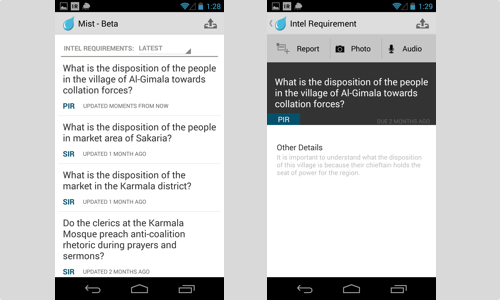
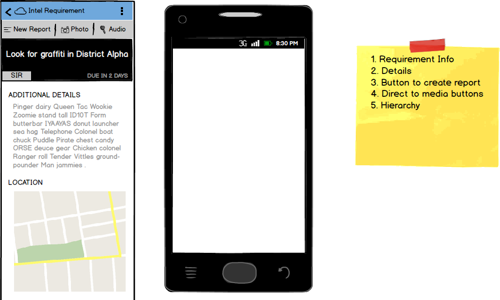
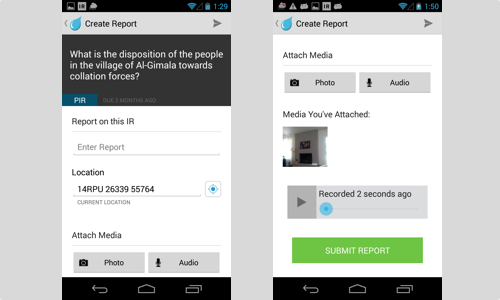
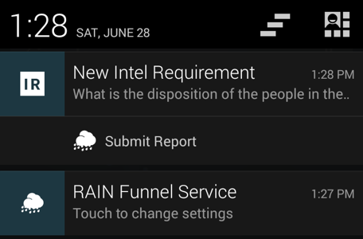

<div class="modal-header">
	<button type="button" class="close" data-dismiss="modal" aria-hidden="true">&times;</button>
	<h4 class="modal-title">Mist</h4>
</div>
<div class="modal-body">
	<article>
		
	</article>
	<aside>Mist is an Android application that is used for creating and sending reports to the RAIN web application. Mist was originally created as an example application to showcase the features of our Android library for integrating third-party apps into our RAIN REST API synchronization service. However, the customer liked it so much that they chose to use the app as their main reporting tool.
	</aside>
	<article>
		
	</article>
	<aside>Our target users are soldiers in the field on patrol. Given this scenario, my team designed Mist from the ground up to be easy to use and to allow the user to create a report with a minimum of touches. This allows the user to focus on their patrol without getting in the way.
	</aside>
	<article>
		
	</article>
	<aside>Reports can consist of any combination of text, photos, and audio recordings. Mist also integrates with the Android Gallery to quicky send a photo to a new report.
	</aside>
	<article>
		
	</article>
	<aside>Mist also provides Android notifications when new requests were added using RAIN, or when the user enters an area of interest specified by a request for information.
	</aside>
	<footer></footer>
</div>
